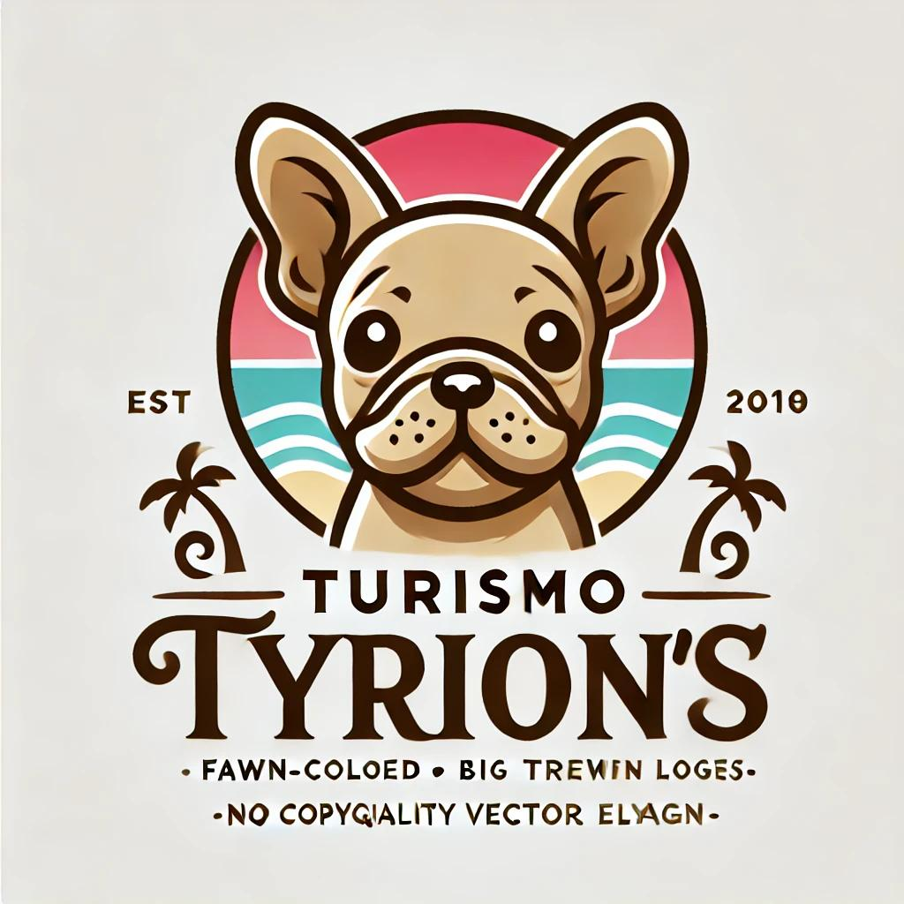

Lugares culturales
Visita zonas arqueológicas, museos y eventos locales.


Contacto
Correo: turismo.tyrions@gmail.com
Teléfono: +52 998 123 4567


Patrimonio, historia y tradición
Visita zonas arqueológicas, museos y eventos locales.
Correo: turismo.tyrions@gmail.com
Teléfono: +52 998 123 4567